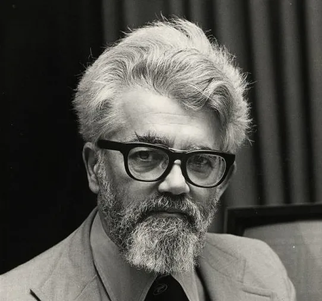

The Invention of Artificial Intelligence

John McCarthy was an American mathematician and computer scientist. McCarthy mostly studied the formalization of common-sense knowledge. Eventually McCarthy and his team would develop the programming language known as LISP, a language used primarily by the AI community.
Hailed as one of the "founding fathers" of A.I. McCarthy worked with the likes of ALan Turing, Marvin Minsky, Nathaniel Rochester and Claude E. Shannon to coin the term artificial Intelligence. Around the late 1950s, McCarthy would develop LISP as well as three of the earliest time sharing systems, which was eventually known as servers, then the cloud.